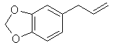
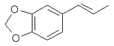
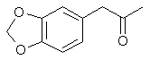
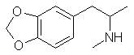

|
Data and text provided by: ZWITTERION (anonymous user)
This text describes the complete process of making MDMA starting from the essential oil extracted from Ocotea Cymabrum (Brazilian Sassafras). ZWITTERION wished me to put his observations into a more fluid and correct form for "reference" use, so I am obliging. He gave me free license to edit where necessary, but I will tend to keep modifications offset by brackets [E - ] to indicate my intrusions, with the exception of spelling/grammar mistakes, which will not be offset. For humor purposes I will also leave most of his rants and raves in. Also, this is *not* a step-by-step synthesis, but the observation of following previously published syntheses. Those syntheses are from the sources:
Data interjected by me can be found in the sources:
[E - Compare the structures of Safrole and Isosafrole: Safrole - 3,4-methylenedioxyphenyl-1-propylene  bp(760): 232°C, d(20): 1.096 Isosafrole - 3,4-methylenedioxyphenyl-2-propylene  bp(760): 253°C, d(20): 1.1206] Well, old ZWITTERION is back! Just when you thought it was safe to post STUPIDITY, I've come to PROVIDE THE EMPIRICAL DATA you sleazy little chemical WHORES love so much. *Part 1 - Isomerization of Safrole* Today's topic is: Isomerization of Safrole Old ZWITTERION, feeling especially felonious this weekend, decided to START A THREE-ALARM FIRE, and felt that there would be NO better way to do this than to isomerize some safrole. Now, as eleusis has posted, one heats up safrole to 244C, which technically ain't gonna happen, with some KOH and CaO. Well, funny thing is, it does happen, and pretty much like he says it will. One BIG FUCKING PROBLEM, Mr. Eleusis (who is no doubt yukking it up in some bizarre spring mystery ceremony when he writes these things) and that is... FIRE! Mr. E, coy as usual, says heat the safrole to 244C. Well, he originally didn't specify how one would do this, assuming, probably, that we all have nice EXPENSIVE Thermowell (TM) brand heating mantles, or Dow-Corning (TM) magnetic stirrer hotplates. Only in your WET DREAMS, E - buddy. [E - a glass-fiber heating mantle is ideal for this process] Though, maybe you SHOULD if you want to do this. Alright. Good enough point. Still, this is what old ZWITTERION did: First ZWITTERION used good old Discount Auto Parts 20W-50 motor oil (because, like the Infamous Wet Dreamer sez - "today's flasks run hotter and rev higher" - funny, funny). Immense smoking commenced at 150C with no sign of letting up! ZWITTERION abandoned this as a suitable heating bath fluid. Next, ZWITTERION sees Eleusis's repost with "gulf wax paraffin" slid in for the heating bath. So, ZWITTERION fires up the old Buffet Burner and throws in 1.5 boxes of Gulf Wax (TM) paraffin. Smoking starts at about 200C this time, but it does make it to 250C. Unfortunately, the way ZWITTERION tested the temperature at 250C was by wrapping a thermometer in Aluminum Foil so that it would be easy to clean. BOOM! [E - a buffet burner is a single coil burner, ~$15] When that Aluminum foil hit the paraffin it went up like a FUCKING FOURTH OF JULY EXTRAVAGANZA. ZWITTERION burned up a nice chem. catalog smothering that one. Finally, after e-mailing Eleusis, who was no doubt feverishly masturbating to the sight of his chemical supply cabinet at the time, he said to use DOT 5 Brake Fluid, as that is what someone else had suggested to him. So, feeling SAUCY, ZWITTERION fired up the buffet burner for a THIRD time and VOI-FREAKIN'-LLA. It works. ZWITTERION wrapped the heating pot and flask, supported on a lattice, with aluminum foil. This was to help keep the heat constant and reduce the smoking, which, MIGHT I ADD, the brake fluid smokes as well, and is a nasty, eye-burning smoke TOO! Once the brake fluid hit 250C, tested WITHOUT wrapping the thermometer in foil, ZWITTERION then added 100g of Oil of Ocotea Cymbarum to which had already been added the required amounts of calcium oxide and potassium hyroxide. [E - it is improper to add the bases before heating, but apparently it worked] ZWITTERION plugged the RB flask with a thermometer in a thermometer adapter, and watched the temp climb, just as Eleusis says it should, from 232C to 250C over a period of 15 minutes. [E - it is dangerous to plug the flask, better to allow some means of venting so that pressure does not build up] At the expiration time, ZWITTERION noticed that the oil was a slightly darker brownish red color instead of the golden piss-yellow color that it started as. It was vacuum filtered, to little advantage, and then OOPS washed with water first - WHICH IS NOT WHAT eleusis SAYS TO DO. [E - it is best to let the post-isomerization mixture settle in a beaker for several hours, then decant off as much of the liquid layer for final distillation] A VICIOUS emulsion formed which was only satisfactorily broken by adding a lot of salt and 10% HCl. ZWITTERION then drew off the aq. layer and the organic layer, and washed the organic layer with 5% HCl one more time before distilling ISOSAFROLE over the range 250-255C (ZWITTERION's thermometer ain't 100% accurate, BTW). Yield was, oh, maybe 85%. All in all, not a bad day's work. [snip] *Part 2 - Purification of the crude Isosafrole* Here's the followups to the fuckups, plus some NEW data all will be sure to LOVE. On Isosafrole: ZWITTERION broke down and bought a goddamn HEATING MANTLE as a result of the brake fluid nonsense in isomerizing SAFROLE TO ISOSAFROLE. Why didn't someone tell me it'd be the BEST $85.00 I'd ever spend? ZWITTERION assembled a fractional distillation setup using the following equipment:
Here's a HOT TIP that eleusis snuck onto a post in a.d.c a while ago which probably NONE of you paid attention to. Mount a bilge pump in a 5 gallon paint bucket (TAKE THE PAINT OUT, GODDAMNIT!) with hoses leading to your condenser. Run the pump off a 12volt power supply (can you say BATTERY CHARGER?) and VOI-FREAKIN'-LLA, you have a self-contained cooling system without the need for a SINK! Not to mention, you can charge the bucket with hot water for high temperature condensations, like ISOSAFROLE, or ice water for ETHER RECOVERY (an all-time favorite thing for ZWITTERION to do while smoking a 6 foot water bong). [E - need I mention that incendiary substances of any form do not mix well with volatile solvents?] Now, where were we? OH YES. So, ZWITTERION took the dark-red product which resulted from the ISOMERIZATION of OIL of OCOTEA CYMBARUM and fractionally distilled it on the heating mantle. There was NO FORERUN. That means NO product came over at a temperature less than ISOSAFROLE's bp of 253C. Approximately 75ml of the crude isosafrole was distilled, with the COLUMN WRAPPED IN ALUMINIUM FOIL to yield 72mL of a CLEAR distillate. There remained in the boiling flask a nasty CRUD which has THUS FAR RESISTED ALL SANE AND INSANE ATTEMPTS AT REMOVAL. [E - Note, the fact that no forerun came over means that all the safrole was consumed, as it is the lowest boiling fraction in oil of ocotea cymbarum. Furthermore, it is necessary to wrap the column with Al foil to prevent excessive heat loss which would otherwise make distillation impossibly long. Finally, drop the heating mantle away from the flask while still stirring magnetically when several mL's are still left to go so that the crud won't carbonize and then *first* rinse the cooled flask with mineral spirits twice before washing with soap and water.] Calculated yield, based on amount of oil of ocotea cymbarum, is 80% pure ISOSAFROLE. There was NO decomposition of product noted as a result of distilling at atmospheric pressure, but then again, ZWITTERION didn't exactly run it through a GODDAMN gas chromatograph. [E - Isosafrole is a clear, somewhat viscous liquid. If it came over clear, as ZWITTERION implies, it likely did not suffer decomposition. The Merck does not indicate that Isosafrole decomposes at it's bp, but no need to take unnecessary chances.] *Part 3 - Conversion of Isosafrole to the ketone intermediate MDP-2-P* MDP2P is shorthand for 3,4-Methylenedioxyphenyl-2-propanone and has the following structure:  bp(2): 110C; bp(40): 160C; bp(100): 190C Due to the RESOUNDING SUCCESS experienced making Isosafrole, ZWITTERION pursued the NEXT STEP, which is to form the ketone, MDP-2-P. Now, old ZWITTERION always thought that reacting a peracid with a non-terminal alkene would make an epoxide, and hydrolysis of said epoxide would result in a 1,2-glycol - but then again, ZWITTERION don't know shit. [E - Under most circumstances, this is correct, but the term is 1,2-Diol or just plain Glycol. It is because of the extreme difference in carbocation character on one side of the epoxide to the other that makes a ketone, rather than a symmetrical diol.] So, ZWITTERION opened up PiHKAL to synthesis #109, courtesy of Dr. Shulgin, and tried to interpret the SPARTAN DETAILS into a workable PROCESS. Here is what has happened SO FAR: ZWITTERION diluted ~20mL of 50% Hydrogen Peroxide to 32mL of 30% Hydrogen Peroxide with distilled water. [E - rumor has it that "Wood Bleach Kits", seen at Builder's Square, contain 27% H2O2 which should work fine.] ZWITTERION poured 133g of 90% Formic Acid into a 500mL RB flask situated in a cold water bath on a magnetic stirrer then added 17mL of distilled water to make 150g of 80% Formic Acid. Is there something fishy with that math? Probably. Fuck it. [E - the math is fine.] The 30% H2O2 solution was SLOWLY added to the HCOOH with stirring and allowed to chill for 30 minutes. 32.4g of Isosafrole was dissolved in 120mL of fresh-from-home-despot(c) Acetone (I always like to have a wild-card reagent just for fun) and this was loaded into an addition funnel which was then placed onto the RB flask and allowed to drip at 1 DROP PER SECOND. All 120mL was delivered within 2 hours with temp checking every 15 minutes to make sure it wasn't getting too HOT. The temp never climbed above 35C as long as ZWITTERION kept adding a few pieces of ice here and there. [E - the ice is added to the water bath, not to the reaction contents] The color of the reaction is the KEY OBSERVATION in this process, since these are the ONLY DETAILS Shulgin gives! Here's a list of the observed color changes at various points in the addition:
The solution remained on the stirrer MUCH TO THE DIFFICULTY OF ME TRYING TO SLEEP for an additional 14 hours. The color remained as it did after all was added and the temperature was STABLE the entire time as noted by my DATA LOGGING thermometer. In other words: SO FAR, SO GOOD. Now the setup was changed to distill on the heating mantle using a cold water condenser and VACUUM from a VACUUM PUMP. Shulgin sez: "distill till ya get about 60g of residue". Whatever that means, so ZWITTERION distills under vacuum (dunno how hard a vacuum, but not out of the reach of a water ass-pirater (c)-POPeye) until he THINKS he has 60g. The temperature started at about 37C and climbed to 45C when I disassembled the setup to weigh the mother liquor. It still had the noxious odor of Formic Acid and when thin was a distinct yellow-red color. The mother liquor weighed 88g so ZWITTERION fired up the distillation again and let the temp reach 53C this time. Upon this second weighing, the mother liquor was much less smelly, but still with a faint odor of HCOOH, and now weighed 44g! GREAT! WHERE DA FUCK did that other 16g go? The distillate was still clear, so I can only assume SOMETHING FISHY happened. Maybe Shulgin just has better lab technique than me? [E - there is no problem here, the final volume of the mother liquor is not an exact target, as long as it is less than twice the starting isosafrole] To this was added 50mL of methanol (not 60 because I had 70% of the expected yield) and ~250mL of 15% Sulphuric Acid (41.5g H2SO4 + 233.5mL water). ZWITTERION placed a thermometer & therm. adapter into the flask and heated GENTLY on the mantle to SIMULATE a steam bath, which ZWITTERION has NO INTENTION of ever using! I was shooting for around 80-90C but the temp quickly hit 115C within minutes, so I dropped the heating mantle down from the flask and continued stirring in the free air. When the temp dropped back down to about 80C, the mantle was replaced and set at a lower setting, where it slowly climbed from there to 95C over the next two hours. In the next 15 minutes, though, the temperature began falling, indicating, at least to this old bastard, that the reaction was coming to a PEACEFUL close. Less than an hour left, I'll let you know what happens in the next edition. *Part 4 - Continuation of making MDP-2-P* Well kids, the ballots are in and all the votes are counted. When we last left off, ZWITTERION was still hydrolysing the epoxide using H2SO4 on a "simulated" steam bath. Temperature proved a bit difficult to control, wandering between 80 and 115C. Not exactly sharp lab technique, but THEN AGAIN, ZWIT ain't none for his flashy lab skills. Besides, the more I FUCK up, the better chance YOU have of doing better, right? Right. Okay, so the temperature falls in the flask and it's been 3 hours so what the fuck - let's dump this baby into a goddamn beaker and start EXTRACTING. Whoa there! Better chill that shit down first... nothing like having ether contact something that's currently TWICE IT'S BOILING POINT. Yah - That'd be pretty spectacular. So ZWIT sets the beaker in ice water while preparing the necessary reagents for all the washes and extractions. After the ketone/acid mix has cooled to about 18C, ZWIT notes the color and appearance. There are two layers present, though not entirely immiscible. A dark, almost black one is on the bottom - the ketone layer, and a translucent reddish-yellow one is on top (the yellow is only apparent near the glass-liquid interfaces, though). ZWIT does the customary three-volumes of ether extraction and combines the extracts, keeping them in the freezer all the while. A total of 225mL of ether is used. ZWIT sets aside the post-extraction aqueous solution JUST IN CASE! Next comes the water wash. ZWIT uses CHILLED distilled water in two washes of 100mL each. The wash water looks much like the aqueous post-extraction layer, proving the wash was a neccessary step. NOW COMES THE TRICKY PART! The final wash is with 10% Sodium Hydroxide solution, and this one is a BITCH. Why? Because a lot of the black shit goes into the hydroxide layer, MAKING IT INDISTINGUISHABLE FROM THE ORGANIC LAYER! ZWIT does a single wash with 100mL of 10% NaOH, but notices that it would be smarter in the future to do 2 or 3 washes of 50mL each. ZWIT solves the "can't-tell-which" problem by REMEMBERING how much NaOH solution was added and holding the sep funnel IN FRONT OF A WINDOW (bright light kids - works every time). [E - you definitely want to use a dilute NaOH wash, of larger volume and split into multiple sections, as ZWITTERION suggests he'd do next time] The organic layer was dumped into a distillation setup and the ether was recovered for reuse using ice water in the condenser flow. Now the vacuum pump is connected and the distillation system is taken down to whatever the damn thing can manage. There is some VIOLENT bumping for a minute and a little water jumps through to the receiver. ZWIT ignores it because a little water never hurt MDP-2-P before. The heating mantle was cranked way up for the projected 200C distillation temp and a pale yellow begins to condense at around 180C. When charring appeared imminent, the mantle was dropped down from around the flask and the vacuum released. It charred anyway. Bastards! The distillate is a PALE YELLOW OIL that smells JUST LIKE CARDAMON - goddamn! That's a NICE bit of information to know, kids! And that smell is the smell of MDP-2-P. Yes! The yield of the distillate, and GET THIS KIDS, was 20.6g! Can you believe that? To the goddamn tenth of a gram JUST LIKE SHULGIN. Maybe my lab technique ain't so bad after all? Oh, and just like most ketones, be careful with it and PLASTIC! A drop got on the top of ZWIT's scale and started EATING A HOLE THROUGH IT! Here's a quick review and chronology:
Note - THE charring is BAD from distilling the ketone. One of ZWIT's flasks is STILL sitting in conc. HCl 6 hours later without any sign of breakup. Next - the MONEY QUESTION: performing the Aluminum Amalgam Reductive Amination ala Dr. Shulgin's PiHKAL #109 - does it work for the home chem.idiot? *Part 5 - Reductive Amination of MDP-2-P to MDMA using Aluminum Amalgam* Holy SHIT you've gotta be FAST with this one. First, let's start with making the aluminum amalgam - IT SUCKS!!! I am relaying the experience from TRY NUMBER TWO because try number one turned into a MONUMENTAL fiasco. Charred mess, lot's of ruined product down the drain. OH THE TRAGEDY! Other than that, though, it's a very nice process. Do not, I repeat, DO NOT make this until you have EVERYTHING ready to go! Line up ALL your little beakers with all your little reagents pre-mixed and THEN YOU CAN START MAKING THE AMALGAM! Why? THE SHIT WILL CATCH ON FIRE! God almighty can I make it through a week without a fire??? I've had to refill the extinguisher TWICE already, and NO IT ISN'T HALON! What will I tell the landlord??? Anyway, so the nun says to the priest, "5 bucks, same as in town". No, wait... Aluminum. Yes, Aluminum. So ZWITTERION has assembled 34g of MDP-2-P, which, upon scaling Shulgin's reaction using a nice little spreadsheet eleusis sent me, meant 26g of Aluminum needed to be cut up into little 1 inch squares. Scissors were considered and abandoned in favor of ripping the living hell out of the crap. You won't BELIEVE how much Aluminum foil is required to make 26g! God! I must have been tearing at the shit for 30 minutes! So the Aluminum gets dumped into a plastic bowl, god forbid you amalgamate mother's silver serving bowl, and approximately 900mL of water was added. Next, .6g of Mercuric Chloride was dissolved in 300mL of water... well, almost dissolved. The SHIT DOESN'T DISSOLVE. Oh well. It was stirred BRISKLY and dumped into the plastic bowl. The whole sloppy mess was stirred for several minutes while watching the news - say, nice job those Serbians have done. After 5 or so minutes, the water starts to turn gray and little fizzies are heard. Stirring is continued for 30 more minutes, occasionally, while ZWITTERION measures out the remaining reagents:
The amalgam gets toasty warm, and starts steaming. [E - Note, next the water is drained off the Al-Hg and washed, though ZWITTERION does not indicate that] I pour the methylamine hcl solution onto it which does nothing. Then I dump a hundred mL's of the IPA on it, it calms down a bit. Next comes the MDP-2-P, a little IPA in the container for rinsing, the NaOH solution - whoa that's a scorcher - and finally, the remaining couple hundred mL's of IPA. I mash the Al-Hg down with a Nalgene(tm) plastic stirrer and commence stirring. The temperature climbs up rapidly and as it passes 50C I submerge the lower half of the plastic reaction cylinder into cold water. The temp stabilises at 55C - whew! Just in time. The Al-Hg has a nasty tendency to rise up above the solution surface forcing me to babysit the damn thing. I stir periodically, not really sure if this is supposed to be a true phase-transfer type of reaction or not, because, clearly, there are two phases forming when unperturbed. Shulgin doesn't specify, so I opt for periodic stirring, figuring it will only be half-fucked up if I'm wrong. After an hour of this, the reaction temp falls from it's stable 55C down to about 35C, but every time I stir it, it jumps back up to 45C. Shulgin sez the reaction is done when it hits room temperature, but he didn't say anything about the temperature jumping while stirring. Fuck it - I'll let it sit all night if I have to, because god-damn, I expect to get 26g of MDMA out of this! 4 hours later, the shit is STILL hovering at 35C, and bubbling like a mini-volcano every few minutes or so. Very bizarre stuff, but not even something as mindlessly fascinating as this can hold ZWITTERION's interest for long, so I go to a bar for a couple of stiff drinks. After 7 hours total elapsed time, the temp is at 27C, the waters are calm with a delicate amber tint, much like apple juice. A small amount of turbidity is present, so it isn't quite the "clear yellow overhead" that Shulgin describes. Great, it's probably contaminated with MPTP or something. ZWIT decants the overhead and filters on the vacuum buchner. Next, 25 mL of Methanol is added to the sludge and half is filtered. The paper is changed and 25mL more MeOH is added for filtering the remaining half. The total filtered solution is then distilled under vacuum. The temperature rises from a start of about 37C to 53C where it stays for SEVERAL HOURS. There is A LOT of liquid that must be removed from the mixture, so be prepared to spend a LONG time at the vac. pump. BTW - ZWIT estimates his pathetic pump to be pulling a GODDAMN WORTHLESS 80mm Hg, assuming the highest boiling fraction to be stripped is water. After a total of approximately 8 hours distilling, there remained 55g of a reddish-yellow liquid with some water and perhaps 10g of what appeared to be regular old table salt. I wasn't about to sprinkle any on my dinner, if you know what I mean. ZWIT only has 2 250mL Sep funnels, so the next part of the process was a REAL TREAT, lemme tell ya. The reddish liquid was dumped into a half- gallon apple juice container which contained 1.54L of distilled water. ZWIT then did a Tag Team no-holds-barred elimination match with his two sep funnels. The suspension was first acidified to pH 5 using 10% HCl. It took approximately 100mL to get it there. Next it was washed by successively treating 7 225mL portions with 2x15mL of methylene chloride. After this strenuous TEDIUM, ZWIT had a cigarette break - to fully enjoy the carcinogenic methylene chloride vapors that were assuredly in the air. Next the washed suspension was basified to pH 9 by the addition of approximately 75mL of 10% NaOH. The suspension turned white with just a slight tinge of pink. Also, on the bottom there was a thin layer of PRODUCT!!! Now kids, it's time to have a little chemistry lesson as to WHY Shulgin likely specified methylene chloride as the organic solvent here: Because it is denser than water, and so is our product. This means that there is no wish-washiness on whether the organic layer will go to the top or bottom of the sep funnel depending on how much dissolved product is in it - it will always want to go to the bottom! [E - this is a nice explanation but not likely correct. the real reason probably has more to do with the relative solubility of the amine in CH2Cl2 rather than it's density] The 7 deal thing was repeated, except using 2x20mL portions of methylene chloride to extract into. The MDMA-laden methylene chloride, a distinctive clear red in color, was then distilled on the heating mantle with an ice-water condensor flow to strip off the solvent. The temp stays dead on 40C for a little over an hour and solvent removal is stopped after the temperature FALLS (no more vapor coming over, kids). Yield of oil is 24g - hey! Where'd the other 2 grams go to??? Oh yes. I almost forgot - this is the BASE, not the SALT. The salt will weigh heavier. Okay. ZWIT always wondered why Shulgin went to the extra trouble of distilling the MDMA oil that remains after stripping the solvent. It's just asking for trouble in my book, especially if you don't have a good vacuum pump, like me (poor things' been subjected to every corrosive substance on the planet, just about). ZWIT added 100mL of IPA to the flask, swirled, then dumped the red liquid into beaker. ZWIT is about to find out WHY you distill the product... Next is crystal-forming time! Are we EXCITED yet or what??? Boy this sure beats making cyanogen bromide any day of the week. ZWIT adds 10mL of concentrated HCl (muriatic acid - if it's good enough for cleaning concrete, it's good enough for drugs) to the beaker while swirling. There is quite a bit of fuming, but no crystals form!?!? Puzzled, ZWIT adds 200mL of ether, and now there is a dilute solution with still no crystals forming. ZWIT suspects one of two things here: either the water content of the IPA (9%) or the water content of my well-used ether (it's assuredly no longer anhydrous) is the culprit, or it's because I didn't DISTILL the goddamn shit like I was supposed to. Awwwwww jeez don't tell me I have to do an acid/base extraction on this shit and DISTILL yet again today? [E - ZWITTERION used too much HCl. Only enough to get the pH mildly acidic is necessary. Also, the crude MDMA must be vacuum distilled at a pressure of 40mm Hg (bp(40): 200C) or lower, to avoid decomposition.] ZWIT, wanting to avoid this as much as possible, evaporates off the solvents to leave a syrupy reddish-brown liquid that smells RIGHT, but doesn't LOOK too healthy. This liquid was then poured onto a glass dinner plate and set on top of a frying pan with boiling water to get it nice and toasty warm for about an hour. The plate was removed and set to cool on the counter, SLOWLY. The next morning, there were CRYSTALS. Of course, they were somewhat brownish and not at all "sellable", but some judicious washing can take care of that problem. Total yield of crystals, pre-purification: 28.4g! The crystals were a light brown and had just the right smell: a hint of cardamon mixed with amine! Ahh the JOY of home COOKING! Kids, if you want to try this yourself, remember, it's a GODDAMN FELONY AND A HALF! But, please, learn from my MISTAKES and then you might REVEL IN MY SUCCESS!  MDMA, mp of the HCl salt: 150-152°C. |